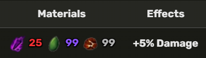

The True Triple Yoru is an admin-exclusive item that is only given to the Blox Fruit Admins or famous youtubers.
Triple Dark Blade Z Move
Triple Dark Blade X Move
1. Be an Admin.
2. Start a Blox Fruits Youtube channel.
3. Become popular and well known in the youtube community specifically for Blox Fruits.
4. Then True Triple Yoru can be obtained.
The player needs to talk to the blacksmith to upgrade this sword: 